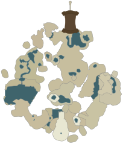

Đền Thờ Nhỏ (152 đền)



ℹ️ Giới thiệu
Tóm tắt
- TOTK có 152 Đền Thờ Nhỏ (120 dưới mặt đất + 32 trên trời) và 31 nhiệm vụ mở đền. Mỗi đền cho 1 Ánh Sáng Chúc Phúc, đổi được lấy Bình Máu hoặc Bình Thể Lực.
- Chạm vào bàn thờ đền là mở điểm dịch chuyển nhanh, không cần giải câu đố ngay.
- Cảm biến Đền Thờ Nhỏ trên Purah Pad giúp tìm đền gần nhất.
- Bảng dưới gồm: tên đền, tên thử thách, loại, vùng (theo Zelda Central).
📍 Akkala (10)
| Shrine | Trial | Type | Location | Gợi ý giải |
|---|---|---|---|---|
| Domizuin Shrine | A Prone Pathway | Giải đố | Akkala Highlands | Dùng Siêu Tay, Hồi Tưởng, Xuyên hoặc Ghép tùy theo tên thử thách. |
| Gatanisis Shrine | A Well-Timed Bounce | Giải đố | Akkala Highlands | Dùng lò xo để bật lên. |
| Gemimik Shrine | Turbine Power | Giải đố | Akkala Highlands | Dùng Siêu Tay, Hồi Tưởng, Xuyên hoặc Ghép tùy theo tên thử thách. |
| Igashuk Shrine | Chúc phúc | Chúc phúc | Akkala Sea | Không có câu đố: vào đền, mở rương, nhận Ánh Sáng Chúc Phúc. |
| Jochi-ihiga Shrine | Chúc phúc | Chúc phúc | Akkala Highlands | Không có câu đố: vào đền, mở rương, nhận Ánh Sáng Chúc Phúc. |
| Jochi-iu Shrine | Courage to Pluck | Giải đố | Deep Akkala | Dùng Siêu Tay, Hồi Tưởng, Xuyên hoặc Ghép tùy theo tên thử thách. |
| Kamatukis Shrine | A Precise Strike | Giải đố | Deep Akkala | Đánh chính xác vào điểm yếu. |
| Rasitakiwak Shrine | Proving Grounds: Vehicles | Đấu trường thử thách | Akkala Highlands | Đánh Construct bằng vũ khí nhặt trong đền (không mang đồ vào). |
| Rasiwak Shrine | Flotational Brilliance | Giải đố | Akkala Sea | Đóng bè nổi để vượt mặt nước. |
| Sinatanika Shrine | Combat Training: Sneakstrike | Luyện chiến đấu | Akkala Highlands | Luyện kỹ năng tương ứng: đánh lén, khiên, ném hoặc bắn cung. |
📍 Central Hyrule (32)
| Shrine | Trial | Type | Location | Gợi ý giải |
|---|---|---|---|---|
| Ekochiu Shrine | Rise and Fall | Giải đố | Great Hyrule Forest | Dùng Siêu Tay nâng vật lên cao. |
| En-oma Shrine | Chúc phúc | Chúc phúc | Lake Hylia | Không có câu đố: vào đền, mở rương, nhận Ánh Sáng Chúc Phúc. |
| Ishodag Shrine | A Windy Device | Giải đố | Hyrule Field | Dùng gió và Quạt để thổi vật. |
| Jiosin Shrine | Shape Rotation | Giải đố | Hyrule Field | Xoay và căn chỉnh hình cho khớp. |
| Jojon Shrine | Proving Grounds: Rotation | Đấu trường thử thách | Hyrule Field _(in a cave)_ | Đánh Construct bằng vũ khí nhặt trong đền (không mang đồ vào). |
| Kamizun Shrine | Proving Grounds: Beginner | Đấu trường thử thách | Hyrule Field | Đánh Construct bằng vũ khí nhặt trong đền (không mang đồ vào). |
| Kikakin Shrine | Shining in Darkness | Giải đố | Great Hyrule Forest | Dùng Siêu Tay, Hồi Tưởng, Xuyên hoặc Ghép tùy theo tên thử thách. |
| Kiuyoyou Shrine | Fire and Ice | Giải đố | Great Hyrule Forest | Dùng lửa để kích hoạt cơ chế. |
| Kyokugon Shrine | Alignment of the Circles | Giải đố | Hyrule Field _(in a cave)_ | Xoay và căn chỉnh hình cho khớp. |
| Kyononis Shrine | Luyện chiến đấu | Luyện chiến đấu | Hyrule Field | Luyện kỹ năng tương ứng: đánh lén, khiên, ném hoặc bắn cung. |
| Makurukis Shrine | Combat Training: Archery | Luyện chiến đấu | Hyrule Ridge | Luyện kỹ năng tương ứng: đánh lén, khiên, ném hoặc bắn cung. |
| Mayachin Shrine | A Fixed Device | Giải đố | Hyrule Field | Dùng Siêu Tay, Hồi Tưởng, Xuyên hoặc Ghép tùy theo tên thử thách. |
| Musanokir Shrine | Swing đến Hit | Giải đố | Great Hyrule Forest | Vung vật để va vào mục tiêu. |
| Ninjis Shrine | Chúc phúc | Chúc phúc | Great Hyrule Forest | Không có câu đố: vào đền, mở rương, nhận Ánh Sáng Chúc Phúc. |
| Pupunke Shrine | Chúc phúc | Chúc phúc | Great Hyrule Forest | Không có câu đố: vào đền, mở rương, nhận Ánh Sáng Chúc Phúc. |
| Ren-iz Shrine | Jump the Gaps | Giải đố | Hyrule Field | Vượt khe bằng Hồi Tưởng hoặc Xuyên. |
| Riogok Shrine | Force Transfer | Giải đố | Hyrule Field | Truyền lực để đẩy vật. |
| Runakit Shrine | Built đến Carry | Giải đố | Hyrule Ridge | Vận chuyển vật tới đích. |
| Sakunbomar Shrine | Chúc phúc | Chúc phúc | Great Hyrule Forest | Không có câu đố: vào đền, mở rương, nhận Ánh Sáng Chúc Phúc. |
| Sepapa Shrine | Backtrack | Giải đố | Hyrule Field | Dùng Siêu Tay, Hồi Tưởng, Xuyên hoặc Ghép tùy theo tên thử thách. |
| Serutabomac Shrine | The Way Up | Giải đố | Hyrule Field | Dùng Siêu Tay, Hồi Tưởng, Xuyên hoặc Ghép tùy theo tên thử thách. |
| Sinakawak Shrine | An Uplifting Device | Giải đố | Hyrule Field | Dùng Siêu Tay, Hồi Tưởng, Xuyên hoặc Ghép tùy theo tên thử thách. |
| Sonapan Shrine | Missing Pathways | Giải đố | Hyrule Ridge | Dùng Siêu Tay, Hồi Tưởng, Xuyên hoặc Ghép tùy theo tên thử thách. |
| Susuyai Shrine | A Spinning Device | Giải đố | Hyrule Field | Dùng Siêu Tay, Hồi Tưởng, Xuyên hoặc Ghép tùy theo tên thử thách. |
| Tadarok Shrine | Fire and Water | Giải đố | Hyrule Field _(in a cave)_ | Điều khiển nước hoặc bè tới đúng vị trí. |
| Tajikats Shrine | Building with Logs | Giải đố | Hyrule Field | Ghép thiết bị theo bản vẽ. |
| Taki-ihaban Shrine | Chúc phúc | Chúc phúc | Hyrule Ridge _(in a cave)_ | Không có câu đố: vào đền, mở rương, nhận Ánh Sáng Chúc Phúc. |
| Teniten Shrine | Combat Training: Throwing | Luyện chiến đấu | Hyrule Field | Luyện kỹ năng tương ứng: đánh lén, khiên, ném hoặc bắn cung. |
| Tenmaten Shrine | Chúc phúc | Chúc phúc | Hyrule Field _(in a cave)_ | Không có câu đố: vào đền, mở rương, nhận Ánh Sáng Chúc Phúc. |
| Tsutsu-um Shrine | The Stakes Guide You | Giải đố | Hyrule Field | Đóng cọc để chặn cơ chế. |
| Usazum Shrine | Chúc phúc | Chúc phúc | Hyrule Ridge | Không có câu đố: vào đền, mở rương, nhận Ánh Sáng Chúc Phúc. |
| Yamiyo Shrine | Combat Training: Throwing | Luyện chiến đấu | Hyrule Field | Luyện kỹ năng tương ứng: đánh lén, khiên, ném hoặc bắn cung. |
📍 Eldin (14)
| Shrine | Trial | Type | Location | Gợi ý giải |
|---|---|---|---|---|
| Isisim Shrine | Proving Grounds: In Reverse | Đấu trường thử thách | Eldin Canyon _(in a cave)_ | Đánh Construct bằng vũ khí nhặt trong đền (không mang đồ vào). |
| Jiotak Shrine | Chúc phúc | Chúc phúc | Eldin Canyon _(in a cave)_ | Không có câu đố: vào đền, mở rương, nhận Ánh Sáng Chúc Phúc. |
| Kimayat Shrine | Proving Grounds: Smash | Đấu trường thử thách | Eldin Canyon | Đánh Construct bằng vũ khí nhặt trong đền (không mang đồ vào). |
| Kisinona Shrine | Wind Power | Giải đố | Eldin Canyon | Dùng gió và Quạt để thổi vật. |
| Marakuguc Shrine | Wheeled Wonders | Giải đố | Eldin Canyon | Hồi Tưởng bánh xe hoặc bánh răng đúng thời điểm. |
| Mayachideg Shrine | Proving Grounds: The Hunt | Đấu trường thử thách | Eldin Canyon | Đánh Construct bằng vũ khí nhặt trong đền (không mang đồ vào). |
| Mayak Shrine | Timely Catches | Giải đố | Eldin Mountains | Canh thời điểm bấm cho đúng nhịp. |
| Minetak Shrine | Chúc phúc | Chúc phúc | Eldin Mountains _(in a cave)_ | Không có câu đố: vào đền, mở rương, nhận Ánh Sáng Chúc Phúc. |
| Momosik Shrine | Chúc phúc | Chúc phúc | Eldin Canyon | Không có câu đố: vào đền, mở rương, nhận Ánh Sáng Chúc Phúc. |
| Moshapin Shrine | Chúc phúc | Chúc phúc | Eldin Canyon | Không có câu đố: vào đền, mở rương, nhận Ánh Sáng Chúc Phúc. |
| Sibajitak Shrine | Alignment | Giải đố | Eldin Canyon | Xoay và căn chỉnh hình cho khớp. |
| Sikukuu Shrine | Spinning Gears | Giải đố | Eldin Mountains | Hồi Tưởng bánh xe hoặc bánh răng đúng thời điểm. |
| Sitsum Shrine | A Controlling Device | Giải đố | Death Mountain | Dùng Siêu Tay, Hồi Tưởng, Xuyên hoặc Ghép tùy theo tên thử thách. |
| Timawak Shrine | Against the Flow | Giải đố | Eldin Canyon | Dùng Siêu Tay, Hồi Tưởng, Xuyên hoặc Ghép tùy theo tên thử thách. |
📍 Faron (3)
| Shrine | Trial | Type | Location | Gợi ý giải |
|---|---|---|---|---|
| Ishokin Shrine | Chúc phúc | Chúc phúc | Faron Grasslands | Không có câu đố: vào đền, mở rương, nhận Ánh Sáng Chúc Phúc. |
| Jiukoum Shrine | Built for Rails | Giải đố | Faron Grasslands | Dùng Siêu Tay, Hồi Tưởng, Xuyên hoặc Ghép tùy theo tên thử thách. |
| Utsushok Shrine | Long or Wide | Giải đố | Faron Grasslands | Dùng Siêu Tay, Hồi Tưởng, Xuyên hoặc Ghép tùy theo tên thử thách. |
📍 Gerudo (16)
| Shrine | Trial | Type | Location | Gợi ý giải |
|---|---|---|---|---|
| Chichim Shrine | Chúc phúc | Chúc phúc | Gerudo Desert | Không có câu đố: vào đền, mở rương, nhận Ánh Sáng Chúc Phúc. |
| Irasak Shrine | Chúc phúc | Chúc phúc | Gerudo Desert | Không có câu đố: vào đền, mở rương, nhận Ánh Sáng Chúc Phúc. |
| Karahatag Shrine | Drifting Flame | Giải đố | Gerudo Desert | Dùng Siêu Tay, Hồi Tưởng, Xuyên hoặc Ghép tùy theo tên thử thách. |
| Kitawak Shrine | Upward and Forward | Giải đố | Gerudo Highlands | Dùng Siêu Tay nâng vật lên cao. |
| Kudanisar Shrine | Bridging the Sands | Giải đố | Gerudo Desert | Dùng Siêu Tay, Hồi Tưởng, Xuyên hoặc Ghép tùy theo tên thử thách. |
| Mayamats Shrine | A Route for a Ball | Giải đố | Gerudo Highlands | Đặt quả cầu đúng vị trí để mở cửa. |
| Mayatat Shrine | A Sliding Device | Giải đố | Gerudo Desert | Dùng Siêu Tay, Hồi Tưởng, Xuyên hoặc Ghép tùy theo tên thử thách. |
| Miryotanog Shrine | Proving Grounds: Lure | Đấu trường thử thách | Gerudo Desert | Đánh Construct bằng vũ khí nhặt trong đền (không mang đồ vào). |
| Motsusis Shrine | Chúc phúc | Chúc phúc | Gerudo Highlands | Không có câu đố: vào đền, mở rương, nhận Ánh Sáng Chúc Phúc. |
| Otutsum Shrine | Chúc phúc | Chúc phúc | Gerudo Highlands | Không có câu đố: vào đền, mở rương, nhận Ánh Sáng Chúc Phúc. |
| Rakakudaj Shrine | Chúc phúc | Chúc phúc | Gerudo Highlands | Không có câu đố: vào đền, mở rương, nhận Ánh Sáng Chúc Phúc. |
| Rotsumamu Shrine | A Balanced Plan | Giải đố | Gerudo Highlands | Dùng Siêu Tay, Hồi Tưởng, Xuyên hoặc Ghép tùy theo tên thử thách. |
| Siwakama Shrine | Moving the Spheres | Giải đố | Gerudo Desert | Dùng Siêu Tay, Hồi Tưởng, Xuyên hoặc Ghép tùy theo tên thử thách. |
| Soryotanog Shrine | Buried Light | Giải đố | Gerudo Desert | Dẫn ánh sáng tới mục tiêu bằng gương. |
| Suariwak Shrine | Chúc phúc | Chúc phúc | Gerudo Highlands | Không có câu đố: vào đền, mở rương, nhận Ánh Sáng Chúc Phúc. |
| Turakamik Shrine | Hidden Metal | Giải đố | Gerudo Highlands | Tìm vật ẩn dưới cát hoặc đất. |
📍 Hebra (18)
| Shrine | Trial | Type | Location | Gợi ý giải |
|---|---|---|---|---|
| Eutoum Shrine | Proving Grounds: Infiltration | Đấu trường thử thách | Hebra Mountains | Đánh Construct bằng vũ khí nhặt trong đền (không mang đồ vào). |
| Gasas Shrine | Well-Timed Cuts | Giải đố | Tabantha Frontier | Canh thời điểm bấm cho đúng nhịp. |
| Gatakis Shrine | Ride the Winds | Giải đố | Tabantha Frontier | Dùng gió và Quạt để thổi vật. |
| Ikatak Shrine | Chúc phúc | Chúc phúc | Tabantha Frontier | Không có câu đố: vào đền, mở rương, nhận Ánh Sáng Chúc Phúc. |
| Iun-orok Shrine | The Right Roll | Giải đố | Tabantha Frontier _(in a cave)_ | Dùng Siêu Tay, Hồi Tưởng, Xuyên hoặc Ghép tùy theo tên thử thách. |
| Mayaotaki Shrine | Chúc phúc | Chúc phúc | Hebra Mountains | Không có câu đố: vào đền, mở rương, nhận Ánh Sáng Chúc Phúc. |
| Mayausiy Shrine | Building Blocks | Giải đố | Tabantha Frontier | Ghép thiết bị theo bản vẽ. |
| Nouda Shrine | Proving Grounds: Intermediate | Đấu trường thử thách | Tabantha Frontier _(in a cave)_ | Đánh Construct bằng vũ khí nhặt trong đền (không mang đồ vào). |
| Orochium Shrine | Courage to Fall | Giải đố | Hebra Mountains | Thả vật rơi đúng vị trí. |
| Oromuwak Shrine | A Launching Device | Giải đố | Tabantha Frontier | Dùng lò xo hoặc Tên Lửa để phóng lên. |
| Oshozan-u Shrine | Mallet Smash | Giải đố | Hebra Mountains | Dùng Siêu Tay, Hồi Tưởng, Xuyên hoặc Ghép tùy theo tên thử thách. |
| Otak Shrine | Proving Grounds: Traps | Đấu trường thử thách | Hebra Mountains _(in a cave)_ | Đánh Construct bằng vũ khí nhặt trong đền (không mang đồ vào). |
| Rutafu-um Shrine | Chúc phúc | Chúc phúc | Hebra Mountains _(in a cave)_ | Không có câu đố: vào đền, mở rương, nhận Ánh Sáng Chúc Phúc. |
| Sahirow Shrine | Aid from Above | Giải đố | Hebra Mountains | Dùng Siêu Tay, Hồi Tưởng, Xuyên hoặc Ghép tùy theo tên thử thách. |
| Sisuran Shrine | Chúc phúc | Chúc phúc | Hebra Mountains | Không có câu đố: vào đền, mở rương, nhận Ánh Sáng Chúc Phúc. |
| Tauyosipun Shrine | Forward or Backward? | Giải đố | Hebra Mountains | Đảo ngược chuyển động bằng Hồi Tưởng. |
| Turakawak Shrine | Stacking a Path | Giải đố | Tabantha Frontier | Dùng Siêu Tay, Hồi Tưởng, Xuyên hoặc Ghép tùy theo tên thử thách. |
| Wao-os Shrine | Lever Power | Giải đố | Hebra Mountains _(in a cave)_ | Dùng Siêu Tay, Hồi Tưởng, Xuyên hoặc Ghép tùy theo tên thử thách. |
📍 Lanayru (13)
| Shrine | Trial | Type | Location | Gợi ý giải |
|---|---|---|---|---|
| Apogek Shrine | Wings on the Wind | Giải đố | Lanayru Great Spring | Dùng gió và Quạt để thổi vật. |
| Ihen-a Shrine | Midair Perch | Giải đố | Lanayru Great Spring | Dùng Siêu Tay, Hồi Tưởng, Xuyên hoặc Ghép tùy theo tên thử thách. |
| Jikais Shrine | Jailbreak | Giải đố | Mount Lanayru | Dùng Siêu Tay, Hồi Tưởng, Xuyên hoặc Ghép tùy theo tên thử thách. |
| Joniu Shrine | Chúc phúc | Chúc phúc | Lanayru Great Spring | Không có câu đố: vào đền, mở rương, nhận Ánh Sáng Chúc Phúc. |
| Jonsau Shrine | Deep Force | Giải đố | Lanayru Wetlands | Truyền lực để đẩy vật. |
| Kurakat Shrine | Chúc phúc | Chúc phúc | Lanayru Great Spring | Không có câu đố: vào đền, mở rương, nhận Ánh Sáng Chúc Phúc. |
| Maoikes Shrine | Chúc phúc | Chúc phúc | Lanayru Wetlands _(in a cave)_ | Không có câu đố: vào đền, mở rương, nhận Ánh Sáng Chúc Phúc. |
| Mogawak Shrine | The Power of Water | Giải đố | Lanayru Great Spring | Điều khiển nước hoặc bè tới đúng vị trí. |
| Morok Shrine | A Bouncy Device | Giải đố | Lanayru Wetlands | Dùng lò xo để bật lên. |
| O-ogim Shrine | Chúc phúc | Chúc phúc | Lanayru Great Spring _(in a cave)_ | Không có câu đố: vào đền, mở rương, nhận Ánh Sáng Chúc Phúc. |
| Tukarok Shrine | Forward Force | Giải đố | Lanayru Wetlands | Truyền lực để đẩy vật. |
| Yomizuk Shrine | Chúc phúc | Chúc phúc | Lanayru Great Spring _(in a cave)_ | Không có câu đố: vào đền, mở rương, nhận Ánh Sáng Chúc Phúc. |
| Zakusu Shrine | Proving Grounds: Ascension | Đấu trường thử thách | Mount Lanayru | Đánh Construct bằng vũ khí nhặt trong đền (không mang đồ vào). |
📍 Necluda (14)
| Shrine | Trial | Type | Location | Gợi ý giải |
|---|---|---|---|---|
| Anedamimik Shrine | A Retraced Path | Giải đố | Đông Necluda (trong hang) | Dùng Siêu Tay, Hồi Tưởng, Xuyên hoặc Ghép tùy theo tên thử thách. |
| Bamitok Shrine | Chúc phúc | Chúc phúc | Đông Necluda (trong hang) | Không có câu đố: vào đền, mở rương, nhận Ánh Sáng Chúc Phúc. |
| Eshos Shrine | Combat Training: Shields | Luyện chiến đấu | Tây Necluda | Luyện kỹ năng tương ứng: đánh lén, khiên, ném hoặc bắn cung. |
| Jochisiu Shrine | Chúc phúc | Chúc phúc | Tây Necluda | Không có câu đố: vào đền, mở rương, nhận Ánh Sáng Chúc Phúc. |
| Jogou Shrine | Chúc phúc | Chúc phúc | Đông Necluda (trong hang) | Không có câu đố: vào đền, mở rương, nhận Ánh Sáng Chúc Phúc. |
| Joju-u-u Shrine | Building Bridges | Giải đố | Tây Necluda | Ghép cầu bằng ván gỗ. |
| Makasura Shrine | An Upright Device | Giải đố | Tây Necluda | Dùng Siêu Tay, Hồi Tưởng, Xuyên hoặc Ghép tùy theo tên thử thách. |
| Marari-in Shrine | Chúc phúc | Chúc phúc | Necluda Sea _(in a cave)_ | Không có câu đố: vào đền, mở rương, nhận Ánh Sáng Chúc Phúc. |
| Mayahisik Shrine | Chúc phúc | Chúc phúc | Đông Necluda (trong hang) | Không có câu đố: vào đền, mở rương, nhận Ánh Sáng Chúc Phúc. |
| Sifumim Shrine | Proving Grounds: Flow | Đấu trường thử thách | Đông Necluda | Đánh Construct bằng vũ khí nhặt trong đền (không mang đồ vào). |
| Susub Shrine | Chúc phúc | Chúc phúc | Tây Necluda | Không có câu đố: vào đền, mở rương, nhận Ánh Sáng Chúc Phúc. |
| Tokiy Shrine | Chúc phúc | Chúc phúc | Tây Necluda (trong hang) | Không có câu đố: vào đền, mở rương, nhận Ánh Sáng Chúc Phúc. |
| Utojis Shrine | Chúc phúc | Chúc phúc | Đông Necluda | Không có câu đố: vào đền, mở rương, nhận Ánh Sáng Chúc Phúc. |
| Zanmik Shrine | Scoop It Out | Giải đố | Đông Necluda | Dùng Siêu Tay múc vật. |
📍 Central Hyrule Sky (8)
| Shrine | Trial | Type | Location | Gợi ý giải |
|---|---|---|---|---|
| Gutanbac Shrine | The Ability to Rise | Giải đố | Great Sky Island | Dùng Siêu Tay nâng vật lên cao. |
| In-isa Shrine | The Ability to Combine | Giải đố | Great Sky Island | Dùng Siêu Tay, Hồi Tưởng, Xuyên hoặc Ghép tùy theo tên thử thách. |
| Jinodok Shrine | Chúc phúc | Chúc phúc | Central Hyrule Sky | Không có câu đố: vào đền, mở rương, nhận Ánh Sáng Chúc Phúc. |
| Mayam Shrine | Chúc phúc | Chúc phúc | Great Hyrule Forest Sky | Không có câu đố: vào đền, mở rương, nhận Ánh Sáng Chúc Phúc. |
| Nachoyah Shrine | The Ability to Rewind | Giải đố | Great Sky Island | Dùng gió và Quạt để thổi vật. |
| Simosiwak Shrine | Proving Grounds: Lights Out | Đấu trường thử thách | Great Hyrule Forest Sky | Đánh Construct bằng vũ khí nhặt trong đền (không mang đồ vào). |
| Taunhiy Shrine | Combat Training: Archery | Luyện chiến đấu | Hyrule Ridge Sky | Luyện kỹ năng tương ứng: đánh lén, khiên, ném hoặc bắn cung. |
| Ukouh Shrine | The Ability to Create | Giải đố | Great Sky Island | Dùng Siêu Tay, Hồi Tưởng, Xuyên hoặc Ghép tùy theo tên thử thách. |
📍 Akkala Sky (3)
| Shrine | Trial | Type | Location | Gợi ý giải |
|---|---|---|---|---|
| Gikaku Shrine | Chúc phúc | Chúc phúc | Akkala Highlands Sky | Không có câu đố: vào đền, mở rương, nhận Ánh Sáng Chúc Phúc. |
| Mogisari Shrine | Courage to Jump | Giải đố | Akkala Sea Sky | Vượt khe bằng Hồi Tưởng hoặc Xuyên. |
| Natak Shrine | Chúc phúc | Chúc phúc | Akkala Highlands Sky | Không có câu đố: vào đền, mở rương, nhận Ánh Sáng Chúc Phúc. |
📍 Eldin Sky (1)
| Shrine | Trial | Type | Location | Gợi ý giải |
|---|---|---|---|---|
| Kadaunar Shrine | Water Makes a Way | Giải đố | Eldin Canyon Sky | Điều khiển nước hoặc bè tới đúng vị trí. |
📍 Faron Sky (2)
| Shrine | Trial | Type | Location | Gợi ý giải |
|---|---|---|---|---|
| Joku-u Shrine | Chúc phúc | Chúc phúc | Faron Grasslands Sky | Không có câu đố: vào đền, mở rương, nhận Ánh Sáng Chúc Phúc. |
| Joku-usin Shrine | Proving Grounds: Short Circuit | Đấu trường thử thách | Faron Grasslands Sky | Đánh Construct bằng vũ khí nhặt trong đền (không mang đồ vào). |
📍 Gerudo Sky (3)
| Shrine | Trial | Type | Location | Gợi ý giải |
|---|---|---|---|---|
| Mayasiar Shrine | Chúc phúc | Chúc phúc | Gerudo Highlands Sky | Không có câu đố: vào đền, mở rương, nhận Ánh Sáng Chúc Phúc. |
| Rakashog Shrine | A Reflective Device | Giải đố | Gerudo Highlands Sky | Dùng Siêu Tay, Hồi Tưởng, Xuyên hoặc Ghép tùy theo tên thử thách. |
| Siyamotsus Shrine | Unlit Blessing | Giải đố | Gerudo Highlands Sky | Dùng Siêu Tay, Hồi Tưởng, Xuyên hoặc Ghép tùy theo tên thử thách. |
📍 Hebra Sky (7)
| Shrine | Trial | Type | Location | Gợi ý giải |
|---|---|---|---|---|
| Ga-ahisas Shrine | Chúc phúc | Chúc phúc | Tabantha Frontier Sky | Không có câu đố: vào đền, mở rương, nhận Ánh Sáng Chúc Phúc. |
| Ganos Shrine | Chúc phúc | Chúc phúc | Tabantha Frontier Sky | Không có câu đố: vào đền, mở rương, nhận Ánh Sáng Chúc Phúc. |
| Ijo-o Shrine | More than Defense | Giải đố | Hebra Mountains Sky | Dùng Siêu Tay, Hồi Tưởng, Xuyên hoặc Ghép tùy theo tên thử thách. |
| Kahatanaum Shrine | Chúc phúc | Chúc phúc | Hebra Mountains Sky | Không có câu đố: vào đền, mở rương, nhận Ánh Sáng Chúc Phúc. |
| Mayaumekis Shrine | Downward Force | Giải đố | Hebra Mountains Sky | Truyền lực để đẩy vật. |
| Taninoud Shrine | Chúc phúc | Chúc phúc | Hebra Mountains Sky | Không có câu đố: vào đền, mở rương, nhận Ánh Sáng Chúc Phúc. |
| Tenbez Shrine | Gravity and Velocity | Giải đố | Hebra Mountains Sky | Dùng Siêu Tay, Hồi Tưởng, Xuyên hoặc Ghép tùy theo tên thử thách. |
📍 Lanayru Sky (4)
| Shrine | Trial | Type | Location | Gợi ý giải |
|---|---|---|---|---|
| Igoshon Shrine | Orbs of Water | Giải đố | Lanayru Great Spring Sky | Điều khiển nước hoặc bè tới đúng vị trí. |
| Jirutagumac Shrine | A Flying Device | Giải đố | Lanayru Great Spring Sky | Dùng Siêu Tay, Hồi Tưởng, Xuyên hoặc Ghép tùy theo tên thử thách. |
| Mayanas Shrine | The Ice Guides You | Giải đố | Lanayru Sea Sky | Dùng Siêu Tay, Hồi Tưởng, Xuyên hoặc Ghép tùy theo tên thử thách. |
| Sihajog Shrine | Chúc phúc | Chúc phúc | Lanayru Great Spring Sky | Không có câu đố: vào đền, mở rương, nhận Ánh Sáng Chúc Phúc. |
📍 Necluda Sky (4)
| Shrine | Trial | Type | Location | Gợi ý giải |
|---|---|---|---|---|
| Josiu Shrine | Chúc phúc | Chúc phúc | Tây Necluda Trên Trời | Không có câu đố: vào đền, mở rương, nhận Ánh Sáng Chúc Phúc. |
| Kumamayn Shrine | Chúc phúc | Chúc phúc | Đông Necluda Trên Trời | Không có câu đố: vào đền, mở rương, nhận Ánh Sáng Chúc Phúc. |
| Ukoojisi Shrine | Chúc phúc | Chúc phúc | Tây Necluda Trên Trời | Không có câu đố: vào đền, mở rương, nhận Ánh Sáng Chúc Phúc. |
| Yansamin Shrine | Proving Grounds: Low Gravity | Đấu trường thử thách | Đông Necluda Trên Trời | Đánh Construct bằng vũ khí nhặt trong đền (không mang đồ vào). |
📜 Shrine Quests (31)
Những đền này mở bằng nhiệm vụ phụ. Mỗi đền vẫn cho 1 Ánh Sáng Chúc Phúc.
| Nhiệm vụ | Đền | Vùng | Người giao / cách mở | Các bước ngắn |
|---|---|---|---|---|
| A Pretty Stone and Five Golden Apples | Pupunke Shrine | Central Hyrule | Damia | Mang 5 quả táo vàng tới Đền Thờ Nhỏ Pupunke (Rừng Hyrule Lớn). |
| Dyeing to Find It | Kurakat Shrine | Lanayru | NPC/ánh sáng | Làm theo chỉ dẫn của NPC hoặc ánh sáng để mở đền. |
| Keys Born of Water | Jochisiu Shrine | Necluda | Steward Construct | Dùng nước để tạo chìa khóa mở đền. |
| Legend of the Soaring Spear | Utojis Shrine | Necluda | NPC trong hang | Theo chỉ dẫn trong Tobio's Hollow, ném giáo vào mục tiêu để mở Đền Thờ Nhỏ Utojis. |
| Maca's Special Đặt | Ninjis Shrine | Central Hyrule | NPC/ánh sáng | Làm theo chỉ dẫn của NPC hoặc ánh sáng để mở đền. |
| None Shall Vượt? | Sakunbomar Shrine | Central Hyrule | NPC/ánh sáng | Làm theo chỉ dẫn của NPC hoặc ánh sáng để mở đền. |
| Ride the Giant Horse | Ishokin Shrine | Faron | NPC/ánh sáng | Làm theo chỉ dẫn của NPC hoặc ánh sáng để mở đền. |
| Rock for Sale | Jochi-ihiga Shrine | Akkala | Hagie | Mua đá từ NPC rồi mang về đền. |
| The Death Caldera Crystal | Momosik Shrine | Eldin | Mysterious Voice | Theo ánh sáng xanh từ đền tới viên pha lê, rồi mang pha lê về đền. |
| The East Hebra Sky Crystal | Taninoud Shrine | Hebra Sky | Mysterious Voice | Theo ánh sáng xanh từ đền tới viên pha lê, rồi mang pha lê về đền. |
| The Gerudo Canyon Crystal | Rakakudaj Shrine | Gerudo | Mysterious Voice | Theo ánh sáng xanh từ đền tới viên pha lê, rồi mang pha lê về đền. |
| The Gisa Crater Crystal | Ikatak Shrine | Hebra | Mysterious Voice | Theo ánh sáng xanh từ đền tới viên pha lê, rồi mang pha lê về đền. |
| The High Spring and the Light Rings | Zakusu Shrine | Lanayru | Nazbi | Nhảy qua các vòng ánh sáng từ trên cao. |
| The Lake Hylia Crystal | En-oma Shrine | Central Hyrule | Mysterious Voice | Theo ánh sáng xanh từ đền tới viên pha lê, rồi mang pha lê về đền. |
| The Lake Intenoch Cave Crystal | Moshapin Shrine | Eldin | Mysterious Voice | Theo ánh sáng xanh từ đền tới viên pha lê, rồi mang pha lê về đền. |
| The Lanayru Road Crystal | O-ogim Shrine | Lanayru | Mysterious Voice | Theo ánh sáng xanh từ đền tới viên pha lê, rồi mang pha lê về đền. |
| The Necluda Sky Crystal | Kumamayn Shrine | Necluda Sky | Mysterious Voice | Theo ánh sáng xanh từ đền tới viên pha lê, rồi mang pha lê về đền. |
| The North Hebra Mountains Crystal | Sisuran Shrine | Hebra | Mysterious Voice | Theo ánh sáng xanh từ đền tới viên pha lê, rồi mang pha lê về đền. |
| The North Hyrule Sky Crystal | Mayam Shrine | Central Hyrule Sky | Mysterious Voice | Theo ánh sáng xanh từ đền tới viên pha lê, rồi mang pha lê về đền. |
| The North Necluda Sky Crystal | Josiu Shrine | Necluda Sky | Mysterious Voice | Theo ánh sáng xanh từ đền tới viên pha lê, rồi mang pha lê về đền. |
| The Northwest Hebra Cave Crystal | Rutafu-um Shrine | Hebra | Mysterious Voice | Theo ánh sáng xanh từ đền tới viên pha lê, rồi mang pha lê về đền. |
| The Oakle's Navel Cave Crystal | Tokiy Shrine | Necluda | Mysterious Voice | Theo ánh sáng xanh từ đền tới viên pha lê, rồi mang pha lê về đền. |
| The Ralis Channel Crystal | Joniu Shrine | Lanayru | Mysterious Voice | Theo ánh sáng xanh từ đền tới viên pha lê, rồi mang pha lê về đền. |
| The Satori Mountain Crystal | Usazum Shrine | Central Hyrule | Mysterious Voice | Theo ánh sáng xanh từ đền tới viên pha lê, rồi mang pha lê về đền. |
| The Sky Mine Crystal | Gikaku Shrine | Akkala Sky | Mysterious Voice | Theo ánh sáng xanh từ đền tới viên pha lê, rồi mang pha lê về đền. |
| The Sokkala Sky Crystal | Natak Shrine | Akkala Sky | Mysterious Voice | Theo ánh sáng xanh từ đền tới viên pha lê, rồi mang pha lê về đền. |
| The South Hyrule Sky Crystal | Jinodok Shrine | Central Hyrule Sky | Mysterious Voice | Theo ánh sáng xanh từ đền tới viên pha lê, rồi mang pha lê về đền. |
| The South Lanayru Sky Crystal | Mayanas Shrine | Lanayru Sky | Mysterious Voice | Theo ánh sáng xanh từ đền tới viên pha lê, rồi mang pha lê về đền. |
| The Tabantha Sky Crystal | Ganos Shrine | Hebra Sky | Mysterious Voice | Theo ánh sáng xanh từ đền tới viên pha lê, rồi mang pha lê về đền. |
| The West Necluda Sky Crystal | Ukoojisi Shrine | Necluda Sky | Mysterious Voice | Theo ánh sáng xanh từ đền tới viên pha lê, rồi mang pha lê về đền. |
| The White Bird's Guidance | Wao-os Shrine | Hebra | Laissa | Đi theo con chim trắng để tới đền. |
🧩 Các dạng câu đố thường gặp
- Siêu Tay làm cầu hoặc thang: ghép ván gỗ bắc qua khe; gắn móc lên ván để trượt như cáp treo.
- Quạt và Tên Lửa: gắn Quạt vào thuyền hoặc xe goòng để chạy nhanh hơn.
- Hồi Tưởng kim đồng hồ: chỉnh hai kim chồng lên nhau cùng chiều.
- Xuyên: tìm trần đặc phía trên để trồi lên.
- Ghép: ghép đá vào vũ khí để phá tường đá; ghép Quả Lửa vào mũi tên.
- Quả cầu và đối trọng: đặt quả cầu đúng vị trí để mở cửa.
- Gió: dùng Quạt để thổi vật nhẹ.
- Đấu trường thử thách: đánh Construct bằng vũ khí nhặt trong đền.
- Đền chúc phúc: không có câu đố, chỉ mở rương và nhận Ánh Sáng Chúc Phúc.
🔗 Danh sách đầy đủ & hình ảnh
- Zelda Central – Toàn bộ 152 Đền Thờ Nhỏ (tên, thử thách, tọa độ)
- Nintendo Life – Toàn bộ vị trí đền kèm bản đồ
- Zelda Dungeon Wiki – Hồ sơ từng đền kèm ảnh chụp màn hình
Mẹo: dùng Cảm biến Đền Thờ Nhỏ trong game để tìm đền gần nhất; chạm vào bàn thờ để mở điểm dịch chuyển nhanh.